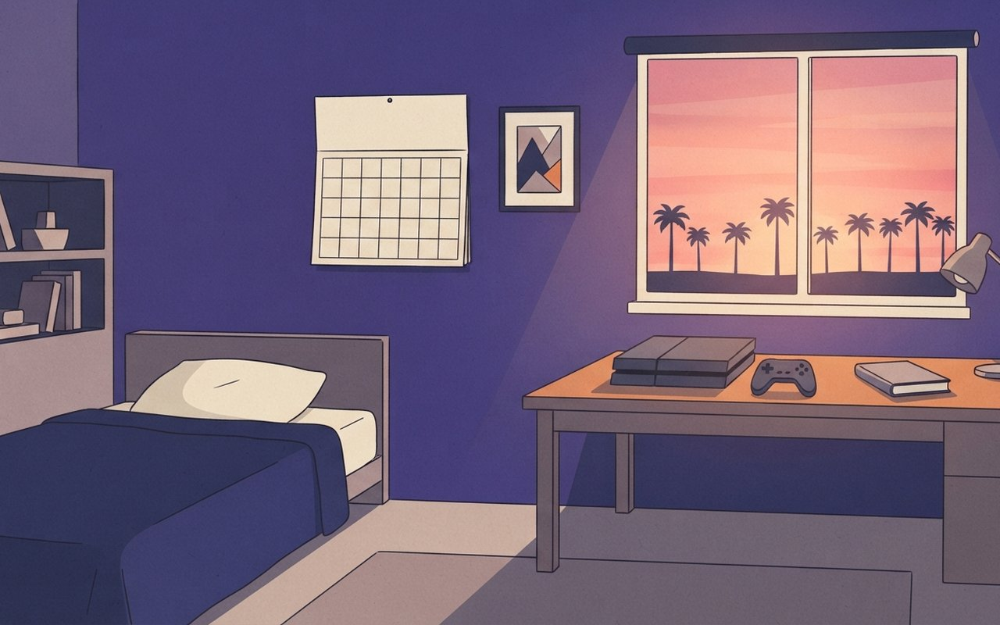
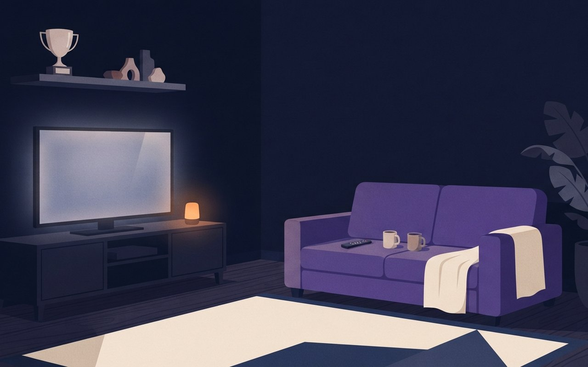

GTA 6 한국 89,800원 · 꿀알바 30일 · 재혼 황후 11/4 · 푸른길 11/20
2026년 10월 28일 수요일 · OTT·게임·웹툰 브리프5 Picks · 게임 1 · 시리즈 3 · 순위 1
〈GTA 6〉가 11월 19일 출시를 22일 앞두고 있습니다. 한국 가격은 스탠다드 89,800원, 얼티밋 112,800원으로 6월 25일 사전 주문 때 공개됐습니다. 이번 주 금요일에는 넷플릭스 〈꿀알바〉(30일)가, 다음 달에는 디즈니+ 〈재혼 황후〉(4일)와 넷플릭스 〈푸른길〉(20일)이 공개됩니다. 순위에서는 〈100일의 거짓말〉이 드라마 화제성 1위로 올라섰습니다. 이번 호에는 본문까지 확인된 웹툰 완결 소식이 없어 싣지 않았습니다.
🎧 듣기 · 약 2분
🎧 낭독 원고 보기
10월 28일 수요일, OTT·게임·웹툰 브리프입니다.
GTA 6가 22일 뒤인 11월 19일에 나옵니다. PS5와 엑스박스 시리즈로 출시되고, 한국 가격은 스탠다드 8만 9,800원, 얼티밋 11만 2,800원입니다. 실물 패키지에도 디스크 없이 내려받는 등록 코드만 들어 있어서, 출시일에 바로 하려면 저장 공간을 미리 확인해 두시는 게 좋습니다.
이번 주 금요일 30일에는 넷플릭스 꿀알바가 공개됩니다. 시급 50배 일자리만 소개하는 인력사무소가 배경인 호러로, 이재욱과 고민시, 김민하, 이희준이 출연합니다. 금요일 공개작은 첫 주 톱10 집계에 사흘치만 들어간다는 점도 기억해 두세요.
순위입니다. 펀덱스 10월 4주차 드라마 화제성 1위는 tvN 100일의 거짓말이었습니다. 닥터X는 2주 연속 1위를 지킨 뒤 2위로 내려왔고, 3위는 ENA 연애박사였습니다. 100일의 거짓말 6회는 자체 최고 시청률 9.5%를 기록했습니다.
다음 달 공개작입니다. 웹툰 원작 재혼 황후가 11월 4일 디즈니플러스에서 공개됩니다. 신민아, 주지훈, 이종석, 이세영이 출연하고, 몰아보기인지 주간 공개인지는 아직 기사에 나오지 않았습니다.
넷플릭스 푸른길은 11월 20일에 공개됩니다. 서울 경찰청 형사 김석, 손석구와 도쿄 경시청 형사 이노세, 나가야마 에이타가 국경을 넘나드는 연쇄 살인을 함께 쫓는 한일 공조 수사극입니다.
지금까지 10월 28일 OTT·게임·웹툰 브리프였습니다. 가격과 공개일, 공개 시각은 바뀔 수 있으니 각 스토어와 플랫폼에서 확인해 주세요. 좋은 하루 보내세요.
릴스 원고 · 카드 1
GTA 6 출시까지 22일 남았습니다. 11월 19일 PS5와 Xbox 시리즈로 나오고, 한국 가격은 스탠다드 8만 9,800원, 얼티밋 11만 2,800원입니다.
2013년 GTA 5 이후 13년 만의 신작입니다. 처음 목표는 2025년 가을이었지만 2026년 5월 26일로, 다시 11월 19일로 두 번 미뤄졌습니다.
락스타의 에런 가벗은 게임인포머 인터뷰에서 무대인 레오니다 지도가 GTA 5의 약 2배라고 했습니다. 면적 수치는 공개하지 않았고, 지역은 6곳, 동물은 170종이 넘습니다.
2025년 5월 공개된 2편 예고편은 첫날 전 플랫폼 합산 4억 7,500만 회 이상 조회됐다고 락스타가 밝혔습니다. 할리우드 리포터는 영화 데드풀과 울버린 예고편의 3억 6,500만 회보다 많다고 전했습니다. 2023년 12월 1편은 유튜브 24시간 9,042만 회로 게임 예고편 기네스 기록을 세웠습니다.
Game — 11월 19일 출시
出
11월 19일
〈GTA 6〉 11월 19일 출시 — PS5·Xbox 시리즈, 한국 가격 스탠다드 89,800원·얼티밋 112,800원
락스타게임즈의 〈GTA 6〉가 11월 19일 출시된다. 오늘(10월 28일)부터 22일 남았다. 플랫폼은 PS5와 Xbox Series X|S이고, 사전 주문은 이 두 기종만 대상이다(인벤 10/15, 게임메카). PC 버전 출시 일정은 기사에 나오지 않는다.
한국 가격은 스탠다드 에디션 89,800원, 얼티밋 에디션 112,800원이다(게임메카 6/25, 인벤 10/15 일치). 실물 패키지에는 디스크 대신 게임을 내려받는 등록 코드가 들어 있다. 두 에디션 모두 빈티지 바이스 시티 팩과 GTA+ 한 달 이용권이 포함된다(게임메카).
2013년 GTA 5 이후 13년 만의 신작이다. 처음 목표는 2025년 가을이었지만 2025년 5월 2일 2026년 5월 26일로(인벤), 11월 6일(현지 시각) 다시 11월 19일로 미뤄졌다(인벤·지디넷코리아). 무대인 레오니다 지도는 락스타의 에런 가벗이 게임인포머 커버스토리(9월 29일)에서 GTA 5의 약 2배라고 했고, 6개 지역·동물 170종 이상·허리케인이 함께 공개됐다(GTA Boom 정리). 락스타는 면적 수치를 공개하지 않았다.
예고편 기록도 있다. 2023년 12월 1편은 유튜브 첫날 9,300만 회 이상으로 비음악 영상 24시간 최다 기록을 세웠고(유튜브 공식 블로그), 기네스는 9,042만 1,491회를 유튜브 24시간 최다 조회 게임 예고편으로 인정했다. 2025년 5월 2편은 첫날 전 플랫폼 합산 4억 7,500만 회 이상 조회됐다고 락스타가 밝혔고, 할리우드 리포터는 이것이 영화 〈데드풀과 울버린〉 예고편(첫 24시간 3억 6,500만 회)보다 많다고 전했다(VGC).
출시11월 19일 · PS5, Xbox Series X|S (PC 일정은 미확인)
한국 가격스탠다드 89,800원 · 얼티밋 112,800원 ⚠ 변동 가능
실물판디스크 없이 등록 코드 수록 — 내려받아 설치
사전 주문6월 25일부터 두 기종 모두 · 런치 트레일러 10월 15일 공개
출시 일정2025년 가을 목표 → 2026년 5월 26일 → 11월 19일 (두 번 연기) · GTA 5(2013) 이후 13년 만
지도·예고편지도 GTA 5의 약 2배(락스타 발언, 면적 비공개) · 2편 예고편 첫날 4억 7,500만 회 이상(전 플랫폼, 락스타 발표) · 1편 유튜브 24시간 9,042만 1,491회(기네스)
📺 알고 보면 달라지는 것
실물 상자를 사도 디스크가 없어서 결국 내려받아 설치해야 한다. 출시일에 바로 하려면 저장 공간과 통신 환경을 미리 확인해 두는 편이 낫다. 가격은 PS5·Xbox 스토어마다 다를 수 있어 결제 전에 직접 확인한다.
인벤 — 출시일·런치 트레일러게임메카 — 한국 가격인벤 — 첫 연기 2026.5.26인벤 — 11월 19일 연기지디넷코리아 — 연기·GTA 5GTA Boom — 게임인포머 지도유튜브 블로그 — 1편 9,300만기네스 — 1편 예고편VGC — 2편 4억 7,500만출시일 11/19·기종·한국 가격 2종은 인벤(10/15 23:05)·게임메카(6/25) 일치 · 실물 코드·빈티지 바이스 시티 팩·GTA+ 한 달은 게임메카(6/25) 단일 · PC 일정은 기사에 없어 적지 않음 · 한국어 지원·프리로드 일정·청소년 등급은 본문 미확인이라 뺐다 · 첫 연기(2026.5.26)는 인벤(2025/5/2 20:46), 둘째 연기는 인벤(2025/11/7 08:57)·지디넷코리아(11/7 10:15) 일치 · 지도 2배·6개 지역·동물 170종+는 게임인포머 원문(구독 전용) 대신 GTA Boom(9/29 · 9/30 수정) 정리 기사로 확인, ㎢ 수치는 팬 추정이라 뺐다 · 1편 9,300만+는 유튜브 공식 블로그(2023/12/5), 9,042만 1,491회는 기네스(2023/12/6) · 2편 4억 7,500만 회 이상은 락스타 발표, 데드풀과 울버린 비교는 할리우드 리포터(VGC 2025/5/8 인용) · 개발 시작 시점은 설이 갈려(2014 구상·2018~2020 본격) 쓰지 않았다 (확인 2026-10-28)
GTA 6, 11월 19일 한국 가격 89,800원
GTA 6가 11월 19일 PS5와 Xbox 시리즈로 나와요. 한국 가격은 스탠다드 89,800원, 얼티밋 112,800원이에요. 실물도 디스크 없이 코드만 들어 있어요.
22일|출시까지 남은 날
A dim teenager bedroom at night, a plain flat generic box-shaped gadget and a controller on a desk, a window glowing pink and orange like a sunset over distant palm trees, a blank paper wall calendar, no people, no brand logos, no text

Series — 이번 주 금요일
夏
이번 주 금요일
시급 50배 알바의 정체 — 넷플릭스 〈꿀알바〉 30일(금) 공개, 이재욱·고민시 출연
넷플릭스 〈꿀알바〉가 10월 30일 금요일 전 세계에 공개된다(매일신문). 빚에 시달리던 청년 혁준(이재욱)이 시급 50배부터 시작하는 고액 아르바이트만 소개하는 인력사무소 '거미인력'에서 일을 시작하며 겪는 이야기를 그린 호러다.
고민시가 노동재해 보호원 사고조사관 연주, 김민하가 혁준의 동생 지윤, 이희준이 인력사무소 사장을 맡는다. 연출은 김다민 감독, 기획 총괄은 한준희 감독이다(매일신문). 회차 수와 공개 시각은 기사마다 달라 적지 않았다.
공개10월 30일(금) 넷플릭스 ⚠ 변동 가능
출연이재욱(혁준) · 고민시(연주) · 김민하(지윤) · 이희준(사장)
설정시급 50배부터 시작하는 고액 알바만 소개하는 인력사무소 '거미인력'
제작연출 김다민 · 기획 총괄 한준희
📺 알고 보면 달라지는 것
넷플릭스 톱10은 월~일 주 단위로 집계된다(10/12~18 집계가 10/21에 발표됐다). 금요일 공개작은 첫 주 집계에 금~일 사흘치만 들어가니, 첫 순위가 낮아 보여도 다음 주 숫자를 같이 봐야 한다.
매일신문 — 공개일·출연위키트리 — 감독 인터뷰공개일 30일·설정·배역·제작진은 매일신문(10/20 입력·10/21 수정) · 공개일은 위키트리(10/8)와 일치 · 회차 수(부작)는 두 기사에 없어 뺐고 장르 표기(미스터리 호러/호러 코미디)는 매체별로 달라 '호러'만 썼다 · 톱10 집계 주기는 10/21 발표 기준 (확인 2026-10-28)
A dim employment office at night with a single flickering ceiling lamp, rows of empty desks with stacks of blank papers, a jar of golden honey on the front desk and a spider web in the corner, no people, no logos, no text
Ranking — 이번 주 화제성
位
화제성 역전
〈100일의 거짓말〉 드라마 화제성 1위 — 〈닥터X〉는 2·3주차 1위 뒤 2위로
굿데이터코퍼레이션 펀덱스의 10월 4주차(10/19~25) TV-OTT 통합 드라마 화제성에서 tvN 〈100일의 거짓말〉이 1위에 올랐다. SBS 〈닥터X〉는 10월 2·3주차 1위였다가 2위로 내려왔다(아이즈·위키트리).
3위는 ENA 〈연애박사〉, 8위는 넷플릭스 〈나를 충전해줘〉, 9위는 티빙 〈로또 1등도 출근합니다〉다. 25일 방송된 〈100일의 거짓말〉 6회는 닐슨코리아 유료플랫폼 전국 가구 기준 자체 최고 9.5%를 기록했다(아이즈).
펀덱스 10월 4주차 드라마 화제성 1위는 100일의 거짓말이에요. 닥터X는 2주 연속 1위를 한 뒤 2위로 내려왔고, 3위는 연애박사예요.
9.5%|6회 자체 최고 시청률
A cozy living room at night with a television glowing in the dark, a remote control and two mugs on a sofa, a blank trophy cup on the shelf, no screens showing images, no people, no logos, no text

Series — 다음 달 공개 예정
后
11월 4일
웹툰 원작 〈재혼 황후〉 11월 4일 디즈니+ 공개 — 신민아·주지훈·이종석·이세영
웹툰 원작 〈재혼 황후〉가 11월 4일 디즈니플러스에서 공개된다. 오늘부터 7일 남았다. 신민아가 황후 나비에, 주지훈이 황제 소비에슈, 이종석이 서왕국의 왕자 하인리, 이세영이 도망 노예 라스타를 맡는다(위키트리 9/11, 일간스포츠 9/29).
위키트리는 10부작이라고 전했지만 일간스포츠 기사에는 회차 수와 공개 방식(한꺼번에/주간)이 없다. 한 번에 몰아볼 수 있는지는 공개일에 앱에서 확인해야 한다.
공개11월 4일(수) 디즈니플러스 ⚠ 변동 가능
출연신민아(나비에) · 주지훈(소비에슈) · 이종석(하인리) · 이세영(라스타)
회차10부작 — 위키트리 단일 보도, 공개 방식은 미확인
원작웹툰
📺 알고 보면 달라지는 것
공개일에 몰아서 풀리는지 매주 한 편씩 풀리는지에 따라 구독을 언제 시작할지 달라진다. 기사에 공개 방식이 없으니, 공개 전날 디즈니플러스 앱의 작품 페이지를 먼저 보는 편이 안전하다.
위키트리 — 공개일·출연일간스포츠 — 공개일공개일 11/4·네 배역은 위키트리(9/11 15:47)·일간스포츠(9/29 10:51) 일치 · 10부작은 위키트리 단일 · 공개 방식(몰아보기/주간)은 두 기사 모두 없어 미확인 · 예고편 조회수·원작 누적 조회수는 배급사 자료 중심이라 뺐다 (확인 2026-10-28)
재혼 황후, 11/4 공개 웹툰 원작 디즈니+
웹툰 원작 재혼 황후가 11월 4일 디즈니플러스에서 공개돼요. 신민아, 주지훈, 이종석, 이세영이 각각 황후, 황제, 왕자, 도망 노예를 맡아요.
11/4
An empty candlelit palace hall at dusk, two ornate empty chairs facing each other across a long marble floor, a golden crown resting on a velvet cushion, tall windows with heavy curtains, no people, no text
路
11월 20일
한일 형사가 쫓는 국경 넘는 연쇄 살인 — 넷플릭스 〈푸른길〉 11월 20일 공개
넷플릭스 〈푸른길〉이 11월 20일 금요일 전 세계 동시 공개된다. 오늘부터 23일 남았다. 서울 경찰청 기동수사대 형사 김석(손석구)과 도쿄 경시청 수사1과 형사 이노세(나가야마 에이타)가 국경을 넘나드는 연쇄 살인을 함께 쫓는 한일 공조 수사극이다(위키트리 10/2).
재일교포 사업가 리윤옥은 김신록이 맡는다. 연출은 한준희 감독, 각본은 조유진 작가이고, 원작은 동명의 한일 합작 만화다. 총 8부작으로 기획됐다(위키트리 단일 보도). 공개 시각은 기사에 없다.
공개11월 20일(금) 넷플릭스 전 세계 동시 ⚠ 변동 가능
출연손석구(김석) · 나가야마 에이타(이노세) · 김신록(리윤옥)
제작연출 한준희 · 각본 조유진 · 원작 한일 합작 만화
회차8부작 기획 — 위키트리 단일 보도
📺 알고 보면 달라지는 것
한국과 일본 형사가 같이 나오는 작품이라 대사가 한국어와 일본어로 섞일 수 있다. 예고편 소개에도 한국어·일본어 메시지가 나온다고 했으니, 자막·더빙 설정은 공개일에 미리 확인해 두면 편하다.
위키트리 — 공개일·출연·제작공개일 11/20·배역·제작진·8부작·원작은 위키트리(10/2 12:57) 단일 — 같은 날짜가 여러 매체에서 확인되나 본문 대조는 이 기사만 함 · 공개 시각은 매체별로 달라 뺐고 줄거리는 공개된 설정 범위만 옮겼다 (확인 2026-10-28)
푸른길, 11월 20일 한일 형사 공조극
넷플릭스 푸른길이 11월 20일 공개돼요. 서울과 도쿄의 형사가 국경을 넘나드는 연쇄 살인을 함께 쫓는 8부작 한일 수사극이에요.
23일|공개까지 남은 날
Two empty desks facing each other in a quiet detective office at night, one desk with a city map and red pins, the other with a different city map, a rainy window behind them, no people, no text